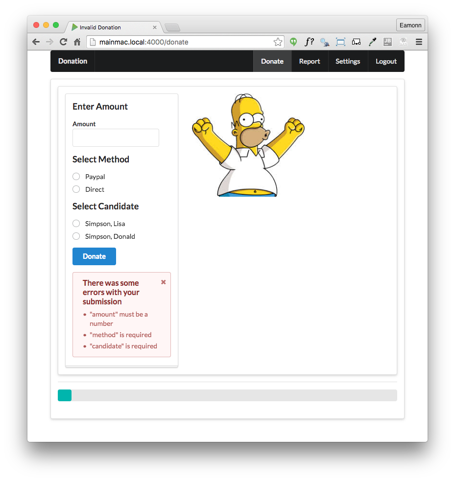

-
Objectives
Include a mongoose seeder component in the application. Use this to validate a new Candidate model, preloading it with a json specified object graph.
-
Mongoose Seeder Utility
During development it can often aid productivity if we can devise some mechanism for populating our database easily. In particular, this will enable is to pre-load the database on startup, so we can proceed to explore various scenarios without having manually enter a range of sample data.
This component here is a useful approach to this:
Install the component into your app now:
npm install mongoose-seeder -save{ "name": "donation-web", "version": "1.0.0", "description": "an application to host donations for candidates", "main": "index.js", "scripts": { "start": "node index", "test": "echo \"Error: no test specified\" && exit 1" }, "author": "", "license": "ISC", "dependencies": { "handlebars": "^4.0.5", "hapi": "^14.1.0", "hapi-auth-cookie": "^6.1.1", "inert": "^4.0.1", "joi": "^9.0.4", "mongoose": "^4.5.8", "mongoose-seeder": "^1.2.1", "vision": "^4.1.0" } }Starting with a sample user + a donation:
app/models/data.json
{ "users": { "_model": "User", "homer": { "firstName": "Homer", "lastName": "Simpson", "email": "homer@simpson.com", "password": "secret" } }, "donations": { "_model": "Donation", "one": { "amount": 40, "method": "paypal", "donor": "->users.homer" } } }Note how the relationship between a user and a donation is represented as
->users.homerin this example.We can load this is
db.js:app/models/db.js
mongoose.connection.on('connected', function () { console.log('Mongoose connected to ' + dbURI); if (process.env.NODE_ENV != 'production') { var seeder = require('mongoose-seeder'); const data = require('./data.json'); const Donation = require('./donation'); const User = require('./user'); seeder.seed(data, { dropDatabase: false, dropCollections: true }).then(dbData => { console.log('preloading Test Data'); console.log(dbData); }).catch(err => { console.log(error); }); } });Try this now. When you restart the app (running locally, not in production), it will delete the contents of the database and then populate with the two objects. Verify that the users and donations collections are as specified in the json file above.
We are logging the preloaded objects in the console:
preloading Test Data { users: { homer: { __v: 0, firstName: 'Homer', lastName: 'Simpson', email: 'homer@simpson.com', password: 'secret', _id: 57a738e1edbdf4a41777d25b } }, donations: { one: { __v: 0, amount: 40, method: 'paypal', donor: 57a738e1edbdf4a41777d25b, _id: 57a738e1edbdf4a41777d25c } } } -
More Preloaded Objects
A more extensive set of objects:
app/models/data.json
{ "users": { "_model": "User", "homer": { "firstName": "Homer", "lastName": "Simpson", "email": "homer@simpson.com", "password": "secret" }, "marge": { "firstName": "Marge", "lastName": "Simpson", "email": "marge@simpson.com", "password": "secret" }, "bart": { "firstName": "Bart", "lastName": "Simpson", "email": "bart@simpson.com", "password": "secret" } }, "donations": { "_model": "Donation", "one": { "amount": 40, "method": "paypal", "donor": "->users.bart" }, "two": { "amount": 90, "method": "direct", "donor": "->users.marge" }, "three": { "amount": 430, "method": "paypal", "donor": "->users.homer" } } }The position of the commas is very important here - as they are separators, not terminators. Try adding an extra comma after the last user object to get a feel for how the app will respond.
-
Introduce and Seed Candidate Model
With this seeding infrastructure in place, we can extend the application model more easily. First, we will introduce a new schema to represent a
Candidatein our app:app/models/candidate.js
'use strict'; const mongoose = require('mongoose'); const candidateSchema = mongoose.Schema({ firstName: String, lastName: String, office: String, }); const Candidate = mongoose.model('Candidate', candidateSchema); module.exports = Candidate;Donations must reference the candidate the donation is intended for. We already reference the donor, so we extend the schema to refer to the candidate:
app/models/donation.js
const donationSchema = mongoose.Schema({ amount: Number, method: String, donor: { type: mongoose.Schema.Types.ObjectId, ref: 'User', }, candidate: { type: mongoose.Schema.Types.ObjectId, ref: 'Candidate', }, });When we define a new model, we must load it before attempting to seed the database:
app/models/db.js
... const Donation = require('./donation'); const User = require('./user'); const Candidate = require('./candidate.js'); seeder.seed(data, { dropDatabase: false, dropCollections: true }).then(dbData => { console.log('preloading Test Data'); console.log(dbData); ...We can now seed this extended model:
app/models/data.json
{ "users": { "_model": "User", "homer": { "firstName": "Homer", "lastName": "Simpson", "email": "homer@simpson.com", "password": "secret" }, "marge": { "firstName": "Marge", "lastName": "Simpson", "email": "marge@simpson.com", "password": "secret" }, "bart": { "firstName": "Bart", "lastName": "Simpson", "email": "bart@simpson.com", "password": "secret" } }, "candidates": { "_model": "Candidate", "lisa": { "firstName": "Lisa", "lastName": "Simpson", "office": "President" }, "donald": { "firstName": "Donald", "lastName": "Simpson", "office": "President" } }, "donations": { "_model": "Donation", "one": { "amount": 40, "method": "paypal", "donor": "->users.bart", "candidate": "->candidates.lisa" }, "two": { "amount": 90, "method": "direct", "donor": "->users.marge", "candidate": "->candidates.lisa" }, "three": { "amount": 430, "method": "paypal", "donor": "->users.homer", "candidate": "->candidates.donald" } } } -
Create Candidate Reference in Donation Object
One the home view, we should pass the list of candidates to the view to enable the user to select which candidate to make a donation to:
app/controllers/donations.js
const Candidate = require('../models/candidate'); ...exports.home = { handler: function (request, reply) { Candidate.find({}).then(candidates => { reply.view('home', { title: 'Make a Donation', candidates: candidates, }); }).catch(err => { reply.redirect('/'); }); }, };In the donate partial = we can present the candidate list as a radio button sequence:
app/views/partials/donate.hbs
<div class="grouped inline fields"> <h3> Select Candidate </h3> {{#each candidates }} <div class="field"> <div class="ui radio checkbox"> <input type="radio" name="candidate" value="{{lastName}},{{firstName}}"> <label>{{lastName}}, {{firstName}}</label> </div> </div> {{/each}} </div> <button class="ui blue submit button">Donate</button>Creating a donation is more complex, as we have to locate the current user in the database, also locate the preferred candidate. Only when these two queries are performed can we create and insert a new donation object:
app/controllers/donations.js
exports.donate = { handler: function (request, reply) { var userEmail = request.auth.credentials.loggedInUser; User.findOne({ email: userEmail }).then(user => { let data = request.payload; const donation = new Donation(data); const rawCandidate = request.payload.candidate.split(','); Candidate.findOne({ lastName: rawCandidate[0], firstName: rawCandidate[1], }).then(candidate => { donation.donor = user._id; donation.candidate = candidate._id; donation.save().then(newDonation => { reply.redirect('/report'); }); }).catch(err => { reply.redirect('/'); }); }).catch(err => { reply.redirect('/'); }); }, };Her is an alternative, less heavily nested version:
exports.donate = { handler: function (request, reply) { var userEmail = request.auth.credentials.loggedInUser; let userId = null; let donation = null; User.findOne({ email: userEmail }).then(user => { let data = request.payload; userId = user._id; donation = new Donation(data); const rawCandidate = request.payload.candidate.split(','); return Candidate.findOne({ lastName: rawCandidate[0], firstName: rawCandidate[1] }); }).then(candidate => { donation.donor = userId; donation.candidate = candidate._id; return donation.save(); }).then(newDonation => { reply.redirect('/report'); }).catch(err => { reply.redirect('/'); }); }, };Compare the above to versions, paying close attention to how the scoping rules operate, requiring additional temporary variables. However, the second version has simpler error handling.
-
Render Candidates in Report View
The donationList partial will need an extra column to hold the candidate:
app/views/partials/donationlist.hbs
<thead> <tr> <th>Amount</th> <th>Method donated</th> <th>Donor</th> <th>Candidate</th> </tr> </thead> <tbody> {{#each donations}} <tr> <td> {{amount}} </td> <td> {{method}} </td> <td> {{donor.firstName}} {{donor.lastName}} </td> <td> {{candidate.lastName}}, {{candidate.firstName}} </td> </tr> {{/each}}Finally, the report handler will need to populate the
canddiatefield in the database:app/controllers/donation.js
exports.report = { handler: function (request, reply) { Donation.find({}).populate('donor').populate('candidate').then(allDonations => { reply.view('report', { title: 'Donations to Date', donations: allDonations, }); }).catch(err => { reply.redirect('/'); }); }, };This should work now as expected.
-
Exercises
Archive of the project so far:
Exercise 1:
Change the donate screen such that users can donate any amount and not just 50, 100, 1000 multiples. For example:

Exercise 2:
Modify the report view to display total donated so far:
Exercise 3:
Incorporate validation into the donate view:
